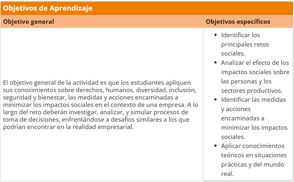
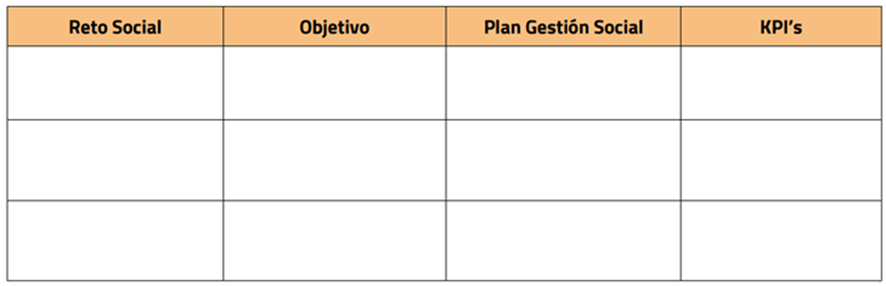

Actividad C5_S5_E1
Descripción: Gestión y medición de retos sociales para el desarrollo de prácticas sostenibles en la empresa
El objetivo del reto en este capítulo es examinar los retos sociales justificando acciones para su gestión y medición para el desarrollo de prácticas sostenibles de la empresa a la que representan.
Para ello, primero se deben plantear los 3 principales retos sociales a los que se enfrenta la empresa, como condiciones laborales justas, igualdad de género, conciliación familiar, diversidad e inclusión, compras a proveedores locales, prevención de riesgos laborales, entre otros. Y a partir de aquí justificar acciones para su gestión y medición, como se ha trabajado a lo largo de este capítulo.
Presta atención a la siguiente tabla para conocer los objetivos de aprendizaje de esta sesión del reto SOMOS PROFESIONALES.

La rúbrica de evaluación nos ayudará a comprobar si hemos alcanzado los objetivos de aprendizaje de esta parte del reto.
Recursos: 🔗 Ficha del Reto - SOMOS SOCIEDAD, 🔗 Ficha del Reto - Rúbrica de evaluación
Tarea:
- Completar la siguiente tabla, teniendo en cuenta las siguientes indicaciones:
- Análisis de impacto social: identifica los 3 principales retos sociales a los que se enfrenta la empresa del área que hayáis determinado. Pueden ser condiciones laborales justas, igualdad de género, conciliación familiar, diversidad e inclusión, compras a proveedores locales, prevención de riesgos laborales, entre otros.
- Establecimiento de 3 objetivos y metas sociales: define objetivos específicos y medibles para abordar cada uno de los retos sociales identificados. Estos objetivos deben ser coherentes con los principios de mejora continua y alineados con los requisitos legales, las normativas sociales y los estándares aplicables al sector.
- Desarrollo de un plan de gestión social para cada reto: diseña un plan detallado que incluya las acciones concretas que la empresa llevará a cabo para gestionar y mitigar sus impactos sociales. Estas acciones pueden incluir: potenciar la empleabilidad de los jóvenes, beneficios y medidas de flexibilidad y conciliación, programas de formación continua para la inclusión y fidelización del talento diverso, actividades de sensibilización hacia la comunidad LGBTIQ+, conseguir el certificado de Estrategias de Compras Sostenibles de AENOR, protocolos de reclutamiento, entre otras medidas.
- Establecimiento de indicadores de desempeño social: define indicadores clave de desempeño ambiental (KPI's) que permitan medir el progreso hacia la consecución de los objetivos y metas sociales establecidas. Estos indicadores pueden incluir % de contratación por género, edad, personas con discapacidad, nacionalidad o colectivo, % de accidentes laborales, certificados y normas, nº de programas de sensibilización al año, horas de formación y capacitación de la plantilla, nº de políticas de flexibilidad y conciliación implementadas, entre otros aspectos relevantes para la gestión ambiental de la empresa.

- Comprueba si hemos alcanzado los objetivos de aprendizaje de esta parte del reto revisando la rúbrica (opcional).